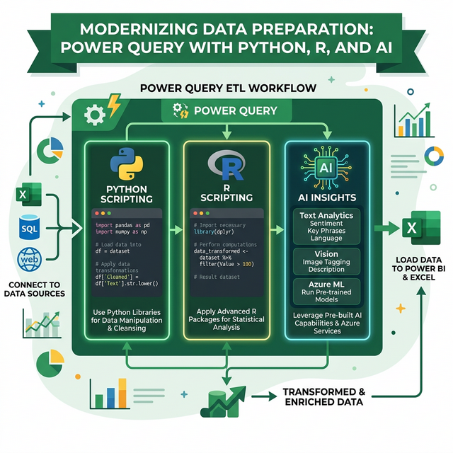

Sử dụng Python, R và AI trong Power Query
Mở rộng sức mạnh Power Query với Python scripting, R scripting, và AI Insights (Text Analytics, Vision, Azure ML).
11.1 Giới thiệu
Power Query hỗ trợ tích hợp Python và R để thực hiện các phép biến đổi phức tạp mà M language không hỗ trợ trực tiếp. Ngoài ra, AI Insights cho phép sử dụng các mô hình AI trực tiếp trong quá trình xử lý dữ liệu.

11.2 Python scripting trong Power Query
Cài đặt môi trường
Cài Python
Tải và cài Python 3.x hoặc Anaconda Distribution
Cài thư viện bắt buộc
Mở Terminal/CMD: pip install pandas matplotlib
Cấu hình đường dẫn
Power BI: File → Options → Python scripting → chọn đường dẫn Python
Chạy Python script
- Trong Power Query Editor → Transform → Run Python Script
- Dữ liệu hiện tại được truyền vào biến dataset (pandas DataFrame)
- Viết code Python → kết quả phải là DataFrame
# dataset: là DataFrame chứa dữ liệu hiện tại
import pandas as pd
# Ví dụ 1: Xóa dòng trùng lặp nâng cao
dataset = dataset.drop_duplicates(subset=['Email'], keep='last')
# Ví dụ 2: Tạo cột mới
dataset['TenVietTat'] = dataset['HoTen'].apply(
lambda x: ''.join([w[0] for w in x.split()])
)
# Ví dụ 3: Phân nhóm theo ngày
dataset['Thang'] = pd.to_datetime(dataset['NgayDat']).dt.month
dataset['Quy'] = pd.to_datetime(dataset['NgayDat']).dt.quarter
# Ví dụ 4: Regex - trích xuất số điện thoại
import re
dataset['SDT_Clean'] = dataset['SDT'].str.extract(r'(\d{10,11})')
# Kết quả: trả về dataset đã xử lý11.3 R scripting trong Power Query
Cài đặt
- Tải và cài R
- Cấu hình: File → Options → R scripting → chọn đường dẫn R
Chạy R script
- Transform → Run R Script
- Dữ liệu được truyền vào biến dataset (data.frame)
# dataset: là data.frame chứa dữ liệu hiện tại
# Ví dụ 1: Thống kê mô tả
output <- data.frame(
Col = names(dataset),
Mean = sapply(dataset, function(x) if(is.numeric(x)) mean(x, na.rm=TRUE) else NA),
SD = sapply(dataset, function(x) if(is.numeric(x)) sd(x, na.rm=TRUE) else NA)
)
# Ví dụ 2: Outlier detection (Z-score)
library(dplyr)
dataset <- dataset %>%
mutate(
Z_Score = (Luong - mean(Luong)) / sd(Luong),
Is_Outlier = abs(Z_Score) > 2
)
# Ví dụ 3: Linear regression
model <- lm(DoanhThu ~ ChiPhi + SoNhanVien, data = dataset)
dataset$Predicted <- predict(model, dataset)11.4 AI Insights (Power BI)
AI Insights cho phép sử dụng các mô hình AI được đào tạo sẵn trong Power Query (Power BI Premium/Pro):
Text Analytics
| Chức năng | Mô tả | Kết quả |
|---|---|---|
| Sentiment Analysis | Phân tích cảm xúc văn bản | Score 0→1 (Negative → Positive) |
| Key Phrase Extraction | Trích xuất từ khóa quan trọng | Danh sách phrases |
| Language Detection | Nhận diện ngôn ngữ | "Vietnamese", "English"... |
Vision
| Chức năng | Mô tả |
|---|---|
| Tag Images | Gắn thẻ tự động cho hình ảnh |
| OCR (Extract Text) | Trích xuất text từ hình ảnh |
Azure Machine Learning
Liên kết mô hình ML đã deploy trên Azure vào Power Query:
- Tab Home → Azure Machine Learning
- Chọn model đã deploy
- Map cột dữ liệu vào input parameters của model
- Kết quả prediction được thêm vào bảng
11.5 So sánh M vs Python vs R
| Tiêu chí | M Language | Python | R |
|---|---|---|---|
| Tốc độ | Nhanh nhất (native) | Trung bình | Trung bình |
| Query Folding | ✅ Có | ❌ Không | ❌ Không |
| Refresh scheduled | ✅ Có | ⚠️ Hạn chế | ⚠️ Hạn chế |
| Xử lý thống kê | Cơ bản | ✅ Mạnh (pandas, scipy) | ✅ Rất mạnh |
| Machine Learning | ❌ | ✅ scikit-learn, TensorFlow | ✅ caret, randomForest |
| Regex | ❌ Không native | ✅ Mạnh | ✅ Mạnh |
| Visualization | ❌ | ✅ matplotlib, seaborn | ✅ ggplot2 |
Bài tập 11.1: Python — Xử lý text nâng cao
Mục tiêu: Sử dụng Python script trong Power Query (Power BI)
- Tạo bảng chứa cột "MoTa" với các đoạn text mô tả sản phẩm
- Mở Power Query → Transform → Run Python Script
- Viết code trích xuất tên viết tắt:
import pandas as pd dataset['VietTat'] = dataset['MoTa'].apply( lambda x: ''.join([w[0].upper() for w in str(x).split()[:3]]) ) - Nhấn OK → Expand kết quả
- Close & Load
Bài tập 11.2: Python — Regex để trích xuất dữ liệu
Mục tiêu: Sử dụng Regex qua Python
- Tạo bảng chứa cột "DiaChi" có format lộn xộn:
- "123 Nguyễn Huệ, Q.1, TP.HCM"
- "45/2 Trần Hưng Đạo, Quận 5, HCM"
- "Số 78, Lê Lợi, P. Bến Thành, Q1, HCM"
- Viết Python script dùng Regex trích xuất số nhà, tên đường, quận
- Close & Load
Bài tập 11.3: R — Thống kê mô tả
Mục tiêu: Sử dụng R cho phân tích thống kê
- Tạo bảng doanh thu 12 tháng với cột Thang, DoanhThu, ChiPhi
- Run R Script để tính: Mean, Median, SD, Correlation
- Tạo bảng output chứa kết quả thống kê
- Close & Load